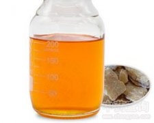

苏合香

拼音
Sū Hé Xiānɡ
别名
苏合油、流动苏合香
来源
本品为金缕梅科枫香属植物苏合香树Liquidambar orientalis Mill. 的树干渗出的香树脂，经加工精制而成。
生境分布
喜生于湿润肥沃的土壤。原产小亚细亚南部。我国广西有栽培。主产土耳其西南部。
药材特点
乔木，高10～15米。叶互生；具长柄；托叶小，早落；叶片掌状5裂，偶为3或7裂，裂片卵形或长方卵形，先端急尖，基部心形，边缘有锯齿。花小，单性，雌雄同株，多数成圆头状花序，黄绿色。雄花的花序成总状排列；雄花无花被，仅有苞片；雄蕊多数，花药矩圆形，2室纵裂，花丝短。雌花的花序单生；花柄下垂；花被细小；雄蕊退化；雌蕊多数，基部愈合，子房半下位，2室，有胚珠数颗，花柱2枚，弯曲。果序圆球状，直径约2.5厘米，聚生多数蒴果，有宿存刺状花柱；蒴果先端喙状，成熟时顶端开裂。种子1或2枚，狭长圆形，扁平，顶端有翅。
性状
本品为半流动性的浓稠液体。棕黄色或暗棕色，半透明。质黏稠。气芳香。本品在90％乙醇、二硫化碳、氯仿或冰醋酸中溶解，在乙醚中微溶。
性味
辛，温。
功能主治
开窃，辟秽，止痛。用于中风痰厥，猝然昏倒，胸腹冷痛，惊痫。
用法用量
0.3～1g，宜入丸散服。
化学成分
树脂含齐墩果酮酸和3-表-齐墩果酸。绿色果实含油0.26％。
药理作用
1：苏合香为刺激性祛痰药：并有较弱的抗菌作用，可用于各种呼吸道感染
2：与橄榄油混合后外用可治疥疮
3：本品有温和的刺激作用：用于局部可缓解炎症，如湿疹和瘙痒，并能促进溃疡与创伤的愈合
4：即使服较大剂量亦不产生蛋白尿
摘录
《中国药典》